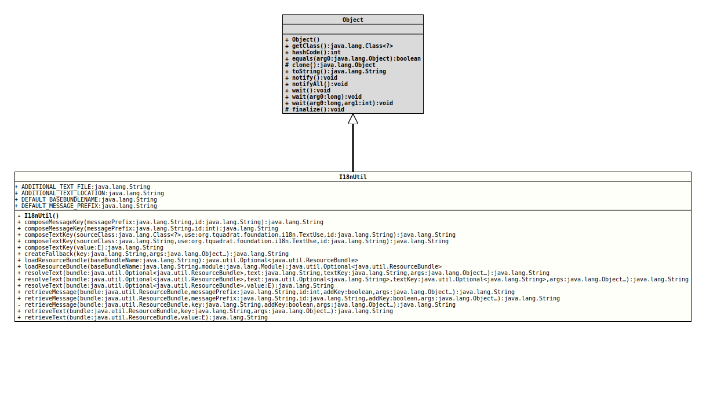

- Author:
- Thomas Thrien (thomas.thrien@tquadrat.org)
- Version:
- $Id: I18nUtil.java 995 2022-01-23 01:09:35Z tquadrat $
- Since:
- 0.1.0
- UML Diagram
-

UML Diagram for "org.tquadrat.foundation.i18n.I18nUtil"
{kind=link}
-
Field Summary
FieldsModifier and TypeFieldDescriptionstatic final StringThe name for the file with the additional texts: "AdditionalTexts.xml".static final StringThe name of the annotation processor option that provides the location for the file with the additional texts ("AdditionalTexts.xml"): "org.tquadrat.foundation.i18n.ap.textLocation".static final StringThe default name for the resource bundle: "MessagesAndTexts".static final StringThe default message prefix: "MSG". -
Constructor Summary
Constructors -
Method Summary
Modifier and TypeMethodDescriptionstatic final StringcomposeMessageKey(String messagePrefix, int id) Composes a message key.static final StringcomposeMessageKey(String messagePrefix, String id) Composes a message key.composeTextKey(E value) Composes the resource bundle key for anenumvalue.static final StringcomposeTextKey(Class<?> sourceClass, TextUse use, String id) Composes the resource bundle key for a text.static final StringcomposeTextKey(String sourceClass, TextUse use, String id) Composes the resource bundle key for a text.static final StringcreateFallback(String key, Object... args) Creates the fallback text or message when the resource bundle does not have a text for the given key.static final Optional<ResourceBundle>loadResourceBundle(String baseBundleName) Loads the resource bundle with the given base bundle name.static final Optional<ResourceBundle>loadResourceBundle(String baseBundleName, Module module) Loads the resource bundle with the given base bundle name.static final StringresolveMessage(Optional<ResourceBundle> bundle, String message, String messageKey, Object... args) Deprecated, for removal: This API element is subject to removal in a future version.static final StringresolveMessage(Optional<ResourceBundle> bundle, Optional<String> message, Optional<String> messageKey, Object... args) Deprecated, for removal: This API element is subject to removal in a future version.UseresolveText(Optional, Optional, Optional, Object...)instead.resolveText(Optional<ResourceBundle> bundle, E value) Returns the Text for the givenenumvalue.static final StringresolveText(Optional<ResourceBundle> bundle, String text, String textKey, Object... args) Returns the Text for the given key, or the alternative text.static final StringresolveText(Optional<ResourceBundle> bundle, Optional<String> text, Optional<String> textKey, Object... args) Returns the Text for the given key, or the alternative text.private static final StringretrieveMessage(ResourceBundle bundle, String key, boolean addKey, Object... args) The internal implementation forretrieveMessage(ResourceBundle, String, int, boolean, Object...)andretrieveMessage(ResourceBundle, String, String, boolean, Object...).static final StringretrieveMessage(ResourceBundle bundle, String messagePrefix, int id, boolean addKey, Object... args) Retrieves the message with the given key from the given resource bundle and applies the given arguments to it.static final StringretrieveMessage(ResourceBundle bundle, String messagePrefix, String id, boolean addKey, Object... args) Retrieves the message with the given key from the given resource bundle and applies the given arguments to it.retrieveText(ResourceBundle bundle, E value) Retrieves the text for the givenenumvalue from the given resource bundle.static final StringretrieveText(ResourceBundle bundle, String key, Object... args) Retrieves the text with the given key from the given resource bundle and applies the given arguments to it.
-
Field Details
-
ADDITIONAL_TEXT_FILE
The name for the file with the additional texts: "AdditionalTexts.xml".- See Also:
-
ADDITIONAL_TEXT_LOCATION
The name of the annotation processor option that provides the location for the file with the additional texts ("AdditionalTexts.xml"): "org.tquadrat.foundation.i18n.ap.textLocation".- See Also:
-
DEFAULT_BASEBUNDLENAME
The default name for the resource bundle: "MessagesAndTexts".- See Also:
-
DEFAULT_MESSAGE_PREFIX
The default message prefix: "MSG".- See Also:
-
-
Constructor Details
-
I18nUtil
private I18nUtil()No instance allowed for this class.
-
-
Method Details
-
composeMessageKey
@API(status=STABLE, since="0.1.0") public static final String composeMessageKey(String messagePrefix, String id) Composes a message key.
The format for the key is like this
<message_prefix>-<id>- Parameters:
messagePrefix- The message prefix.id- The message id.- Returns:
- The message key.
-
composeMessageKey
@API(status=STABLE, since="0.1.0") public static final String composeMessageKey(String messagePrefix, int id) Composes a message key.
The format for the key is like this
<message_prefix>-<id>The id will be a six-digit number, prepended with zeroes if required.
- Parameters:
messagePrefix- The message prefix.id- The message id.- Returns:
- The message key.
-
composeTextKey
@API(status=STABLE, since="0.1.0") public static final String composeTextKey(Class<?> sourceClass, TextUse use, String id) Composes the resource bundle key for a text.
The format for the key is like this:
<class_name>.<use>_<id>- Parameters:
sourceClass- The class where the text was defined.use- The text use.id- The id for the text, as from@Text.id.- Returns:
- The text key.
-
composeTextKey
@API(status=STABLE, since="0.1.0") public static final String composeTextKey(String sourceClass, TextUse use, String id) Composes the resource bundle key for a text.
The format for the key is like this:
<class_name>.<use>_<id>- Parameters:
sourceClass- The name of the class where the text was defined.use- The text use.id- The id for the text, as from@Text.id.- Returns:
- The text key.
-
composeTextKey
@API(status=STABLE, since="0.1.0") public static final <E extends Enum<?>> String composeTextKey(E value) Composes the resource bundle key for an
enumvalue.The format for the key is like this:
<class_name>.STRING_<name>- Type Parameters:
E- The type of theenumvalue.- Parameters:
value- Theenumvalue.- Returns:
- The text key.
- See Also:
-
createFallback
@API(status=STABLE, since="0.1.0") public static final String createFallback(String key, Object... args) Creates the fallback text or message when the resource bundle does not have a text for the given key.- Parameters:
key- The failed key.args- The arguments.- Returns:
- The fallback text.
-
loadResourceBundle
@API(status=STABLE, since="0.1.0") public static final Optional<ResourceBundle> loadResourceBundle(String baseBundleName) Loads the resource bundle with the given base bundle name. If there is no resource bundle for the given base bundle name, the return value is empty.
If your program is using modules, the module that contains the resource bundle must be located in the default package (no package at all), or you should use
loadResourceBundle(String, Module)instead of this method.- Parameters:
baseBundleName- The base bundle name.- Returns:
- An instance of
Optionalthat holds the resource bundle.
-
loadResourceBundle
@API(status=STABLE, since="0.1.0") public static final Optional<ResourceBundle> loadResourceBundle(String baseBundleName, Module module) Loads the resource bundle with the given base bundle name. If there is no resource bundle for the given base bundle name, the return value is empty.
Use this method only if your program is using modules; otherwise prefer
loadResourceBundle(String).The resource bundle to load must be in an package that is open this module (
org.tquadrat.foundation.i18n) or in no package at all.- Parameters:
baseBundleName- The base bundle name.module- The module that provides the resource bundle; usually, this is the caller's module.- Returns:
- An instance of
Optionalthat holds the resource bundle.
-
resolveMessage
@Deprecated(forRemoval=true, since="0.0.2") @API(status=DEPRECATED, since="0.0.2") public static final String resolveMessage(Optional<ResourceBundle> bundle, String message, String messageKey, Object... args) Deprecated, for removal: This API element is subject to removal in a future version.UseresolveText(Optional, String, String, Object...)instead.Returns the message for the given key, or the alternative text.- Parameters:
bundle- The resource bundle.message- The message.messageKey- The resource bundle key for the alternative message.args- The argument for the alternative message.- Returns:
- The resolved message.
-
resolveMessage
@Deprecated(forRemoval=true, since="0.0.2") @API(status=DEPRECATED, since="0.0.2") public static final String resolveMessage(Optional<ResourceBundle> bundle, Optional<String> message, Optional<String> messageKey, Object... args) Deprecated, for removal: This API element is subject to removal in a future version.UseresolveText(Optional, Optional, Optional, Object...)instead.Returns the message for the given key, or the alternative text.- Parameters:
bundle- The resource bundle.message- The message.messageKey- The resource bundle key for the alternative message.args- The argument for the alternative message.- Returns:
- The resolved message.
-
resolveText
@API(status=STABLE, since="0.1.0") public static final String resolveText(Optional<ResourceBundle> bundle, String text, String textKey, Object... args) Returns the Text for the given key, or the alternative text. This method is primarily used internally by the library, but can be also useful in other scenarios where the presence of a
ResourceBundleis not guaranteed.If there is a resource bundle,
retrieveText(ResourceBundle, String, Object...)should be used instead.- Note:
-
textis used as is! The arguments will be applied only to a text that will be retrieved from the resource bundle!
- Parameters:
bundle- The resource bundle.text- The alternative text that is used if there is no resource bundle, or that bundle does not contain a text for the given key.textKey- The resource bundle key for the text.args- The argument for the retrieved text.- Returns:
- The resolved text.
-
resolveText
@API(status=STABLE, since="0.1.0") public static final String resolveText(Optional<ResourceBundle> bundle, Optional<String> text, Optional<String> textKey, Object... args) Returns the Text for the given key, or the alternative text. This method is primarily used internally by the library, but can be also useful in other scenarios where the presence of a
ResourceBundleis not guaranteed.If there is a resource bundle,
retrieveText(ResourceBundle, String, Object...)should be used instead.- Note:
-
textis used as is! The arguments will be applied only to a text that will be retrieved from the resource bundle!
- Parameters:
bundle- The resource bundle.text- The alternative text that is used if there is no resource bundle, or that bundle does not contain a text for the given key.textKey- The resource bundle key for the text.args- The argument for the retrieved text.- Returns:
- The resolved text.
-
resolveText
@API(status=STABLE, since="0.1.0") public static final <E extends Enum<?>> String resolveText(Optional<ResourceBundle> bundle, E value) Returns the Text for the given
enumvalue. This method is primarily used internally by the library, but can be also useful in other scenarios where the presence of aResourceBundleis not guaranteed.If there is a resource bundle,
retrieveText(ResourceBundle, Enum)should be used instead.- Type Parameters:
E- The type of theenumvalue.- Parameters:
bundle- The resource bundle.value- Theenumvalue.- Returns:
- The resolved text.
-
retrieveMessage
public static final String retrieveMessage(ResourceBundle bundle, String messagePrefix, int id, boolean addKey, Object... args) Retrieves the message with the given key from the given resource bundle and applies the given arguments to it.
If the resource bundle does not contain a message for the given key, the key itself will be returned, appended with the arguments.
- Parameters:
bundle- The resource bundle.messagePrefix- The message prefix.id- The id for the message.addKey- The recommended value istrue; this means that the message will be prefixed with the generated message key.args- The arguments for the message.- Returns:
- The text.
-
retrieveMessage
public static final String retrieveMessage(ResourceBundle bundle, String messagePrefix, String id, boolean addKey, Object... args) Retrieves the message with the given key from the given resource bundle and applies the given arguments to it.
If the resource bundle does not contain a message for the given key, the key itself will be returned, appended with the arguments.
- Parameters:
bundle- The resource bundle.messagePrefix- The message prefix.id- The id for the message.addKey- The recommended value istrue; this means that the message will be prefixed with the generated message key.args- The arguments for the message.- Returns:
- The text.
- See Also:
-
retrieveMessage
@API(status=INTERNAL, since="0.1.0", consumers="retrieveMessage()") private static final String retrieveMessage(ResourceBundle bundle, String key, boolean addKey, Object... args) The internal implementation forretrieveMessage(ResourceBundle, String, int, boolean, Object...)andretrieveMessage(ResourceBundle, String, String, boolean, Object...).- Parameters:
bundle- The resource bundle.key- The key for the message.addKey- The recommended value istrue; this means that the message will be prefixed with the generated message key.args- The arguments for the message.- Returns:
- The text.
-
retrieveText
Retrieves the text with the given key from the given resource bundle and applies the given arguments to it.
If the resource bundle does not contain a text for the given key, the key itself will be returned, appended with the arguments.
- Parameters:
bundle- The resource bundle.key- The key for the text.args- The arguments for the text.- Returns:
- The text.
- See Also:
-
retrieveText
Retrieves the text for the given
enumvalue from the given resource bundle.If the resource bundle does not contain a text for the
enum, the text key for it will be returned.- Type Parameters:
E- The type of theenumvalue.- Parameters:
bundle- The resource bundle.value- Theenumvalue.- Returns:
- The text.
-
resolveText(Optional, String, String, Object...)instead.